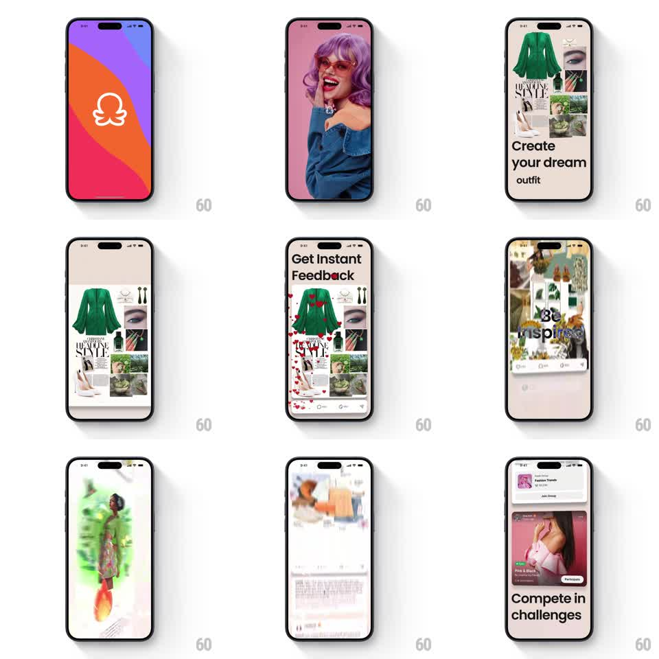

Media
Frame-by-frame

Rebuild this animation 1:1: Combyne's onboarding intro - a fast multi-step sequence from the gradient logo splash through feature pages ("Create your dream outfit", "Get Instant Feedback", "Be Inspired", "Compete in challenges") with collage imagery, floating heart reactions, and staggered text reveals.

Rebuild this animation 1:1: Combyne's onboarding intro - a fast multi-step sequence from the gradient logo splash through feature pages ("Create your dream outfit", "Get Instant Feedback", "Be Inspired", "Compete in challenges") with collage imagery, floating heart reactions, and staggered text reveals.
## Integration
Integration: stack-agnostic spec - springs given as stiffness/damping, timed motions as duration + curve; map every value to your framework and animation library of choice.
## Scene
Step 0: full-screen orange-purple gradient with the white combyne logo. Step 1: full-bleed model photo. Step 2: outfit-collage page (green blouse, editorial cutouts) with "Create your dream outfit". Step 3: same collage with "Get Instant Feedback" as red hearts float up over it. Step 4: a dense inspiration feed ("Be Inspired"). Step 5: challenge page with a "Fashion Trends" group card, a live challenge card, and "Compete in challenges".
## Motion spec
Pattern: multi-step onboarding with staggered reveals and particle reactions, ~7s.
- Splash: logo scales/fades in (spring ~320/16), then the gradient wipes up into the photo (500ms, ease-in-out).
- Page advances: each step slides up over the last (400ms, ease-out); photos get a slight Ken Burns drift (scale 1 -> 1.06 over their dwell).
- Text: headlines reveal word by word (80ms stagger, slide-up + fade, ease-out).
- Reactions: on the feedback step, hearts emit from the bottom (1 every 90ms, ~14 total), drifting up with sway and fading over 1.2s.
- Final step: group card slides in from the top, challenge card from the bottom (springs ~300/20), headline last.
## Calibration
- Keep each step's dwell short (~1s); this is a hype reel, not a tutorial.
- Hearts originate from the collage area, not the screen corners.
## Reduced motion
Steps cross-fade (250ms); headlines appear whole; no hearts.
## Don't miss
- The gradient splash uses the brand's orange-to-purple sweep with the white logo centered.
- Headlines are large, left-aligned, sentence case: "Create your dream outfit", "Get Instant Feedback", "Be Inspired", "Compete in challenges".